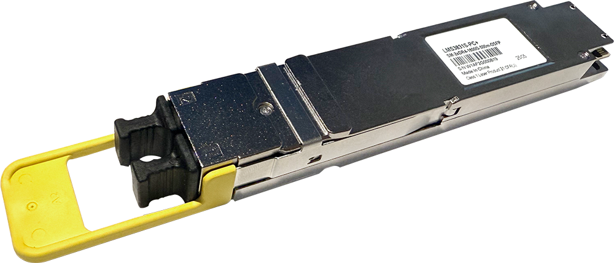
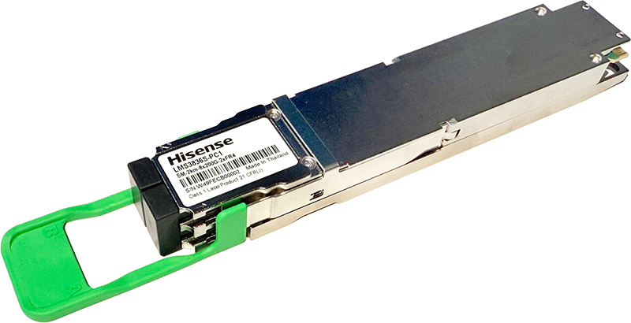
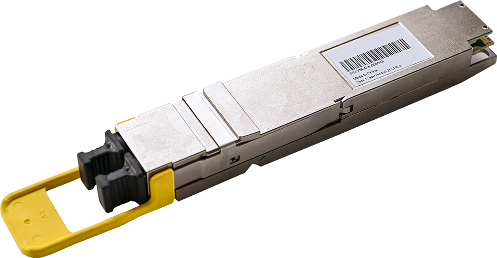
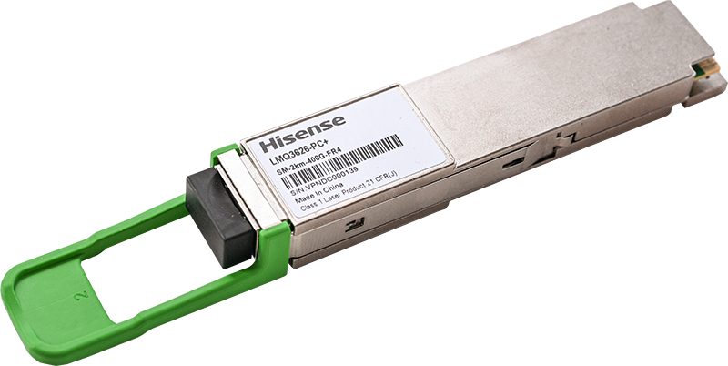
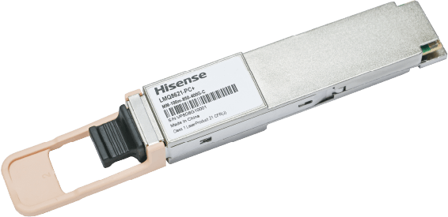
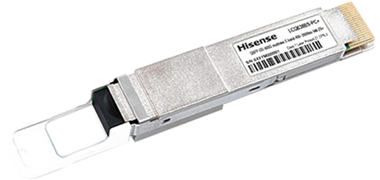

For detailed product specifications and ordering, please contact us.
← Solutions
AI Clusters | Data Centers
The rapid evolution of AI clusters and data centers demands increasingly high-speed connectivity solutions. Our 400G, 800G, and 1.6T pluggable transceivers provide scalable, high-bandwidth optical interconnects—essential for Generative AI and data center workloads, with ultra-low latency, high reliability, and efficient power consumption.
Product Portfolio
1.6T Family

- 1.6T OSFP 2xDR4 Available in EML and Silicon Photonics engines | Reach: 500m | Client 8x200G-PAM4 | 0 to 70℃ operating temperature | Compliant with IEEE802.3dj
- 1.6T OSFP 2xFR4 Available in EML and Silicon Photonics engines | Reach: 2 Km | Client 8x200G-PAM4 | 0 to 70℃ operating temperature | Compliant with IEEE02.3dj
- 1.6T OSFP 2xDR4 LRO / TRO Silicon Photonics engine | Reach: 500 m | Client 8x200G-PAM4 | 0 to 70℃ operating temperature | Compliant with IEEE802.3dj
- 1.6T OSFP 2xFR4 LRO / TRO Silicon Photonics engine | Reach: 2 Km | Client 8x200G-PAM4 | 0 to 70℃ operating temperature | Compliant with IEEE02.3dj
- 1.6T OSFP 2xDR4 LPO Silicon Photonics and TFLN (Thin Film Lithium Niobate) engines | Reach: 500 m | Client 8x200G-PAM4 | 0 to 70℃ operating temperature | Compliant with IEEE802.3dj
800G (200G per lane) Family

- 800G OSFP FR4 EML engine | Reach: 2 Km | Client 4x200G-PAM4 | 0 to 70℃ operating temperature | Compliant with IEE802.3dj
- 800G OSFP DR4 Silicon Photonics engine | Reach: 500 m | Client 4x200G-PAM4 | 0 to 70℃ operating temperature | Compliant with IEE802.3dj
800G (100G per lane) Family

- 800G OSFP 2xDR4 / DR8 Available in EML and Silicon Photonics engines | Reach: 500m | Client 8x100G-PAM4 | 0 to 70℃ operating temperature | Compliant with IEEE802.3df
- 800G OSFP 2xFR4 Available in EML and Silicon Photonics engines | Reach: 2 Km | Client 8x100G-PAM4 | 0 to 70℃ operating temperature | Compliant with IEEE802.3df
- 800G OSFP 2xFR4 LRO / TRO Silicon Photonics engine | Reach: 2Km | 8x100G-PAM4 | 0 to 70℃ operating temperature | Compliant with IEE802.3df and LPO-MSA 100G-DR-LPO
- 800G OSFP 2xDR4 LRO / TRO Silicon Photonics engines | Reach: 500m | Client 8x100G-PAM4 | 0 to 70℃ operating temperature | Compliant with IEEE802.3df
- 800G OSFP 2xDR4 LPO Silicon Photonics engine | Reach: 500m | 8x100G-PAM4 | 0 to 70℃ operating temperature | Compliant with IEE802.3df and LPO-MSA 100G-DR-LPO
- 800G OSFP 2xFR4 LPO Silicon Photonics engine | Reach: 2Km | 8x100G-PAM4 | 0 to 70℃ operating temperature | Compliant with IEE802.3df and LPO-MSA 100G-DR-LPO
- 800G OSFP 2xVR4 / VR8 / SR8 VCSEL based engine | Reach: 50m | 8x100G-PAM4 | 15 to 70℃ operating temperature | Compliant with IEE802.3df
- 800G OSFP VR8 / SR8 AOC VCSEL based engine | Reach: 50m | 8x100G-PAM4 | 15 to 70℃ operating temperature | Compliant with IEE802.3df
- 1x800G QSFP-DD VR8 / SR8 to 2xQSFP112 400G AOC VCSEL based engine | Reach: 50m | 8x100G-PAM4 | 15 to 70℃ operating temperature | Compliant with IEE802.3df
400G (100G per lane) Family

- 400G QSFP112 DR4 Silicon Photonics engine | Reach: 500m | 4x100G-PAM4 | 0 to 70℃ operating temperature | Compliant with IEEE802.3ck
- 400G QSFP112 FR4 EML engine | Reach: 2Km | 4x100G-PAM4 | 0 to 70℃ operating temperature | Compliant with IEEE802.3ck
- 1x400G QSFP112 DR4 to 2xQSFP112 AOC Silicon Photonics engine | Reach: 50m | 4x100G-PAM4 | 0 to 70℃ operating temperature | Compliant with IEEE802.3ck
- 400G QSFP112 DR4 LPO Silicon Photonics engine | Reach: 500m | 4x100G-PAM4 | 0 to 70℃ operating temperature | Compliant with IEE802.3ck and LPO-MSA 100G-DR-LPO
- 400G QSFP-DD DR4 Silicon Photonics engine | Reach: 500m | 4x100G-PAM4 | 0 to 70℃ operating temperature | Compliant with IEEE802.3ck
- 400G QSFP-DD FR4 EML engine | Reach: 2Km | 4x100G-PAM4 | 0 to -70℃ operating temperature | Compliant with IEEE802.3ck
- 400G OSFP VR4 VCSEL based engine | Reach: 50m | 4x100G-PAM4 | 15 to 70℃ operating temperature | Compliant with IEEE802.3ck
- 400G OSFP to 400G QSFP-DD AOC VCSEL based engine | Reach: 50m | 4x100G-PAM4 | 15 to 70℃ operating temperature | Compliant with IEEE802.3ck
- 400G OSFP AOC QSFP112 VCSEL based engine | Reach: 50m | 4x100G-PAM4 | 15 to 70℃ operating temperature | Compliant with IEEE802.3ck
- 400G QSFP112 VR4 VCSEL based engine | Reach: 50m | 4x100G-PAM4 | 15 to 70℃ operating temperature | Compliant with IEEE802.3ck
- 1x400G QSFP112 to 2x200G QSFP112 AOC VCSEL based engine | Reach: 50m | 4x100G-PAM4 | 15 to 70℃ operating temperature | Compliant with IEEE802.3ck
- 400G QSFP-DD VR4 VCSEL based engine | Reach: 50m | 4x100G-PAM4 | 15 to 70℃ operating temperature | Compliant with IEEE802.3ck
- 400G QSFP-DD SR8 VCSEL based engine | Reach: 100m | 8x50G-PAM4 | 0 to 70℃ operating temperature | Compliant with IEEE802.3ck
- 400G QSFP-DD SR4.2 VCSEL based engine | Reach: 100m | 8x50G-PAM4 | 0 to 70℃ operating temperature | Compliant with IEEE802.3ck
200G Family

- 200G QSFP112 VR2 VCSEL based engine | Reach: 50m | 2x100G-PAM4 | 15 to 70℃ operating temperature | Compliant with IEEE802.3bs
- 200G QSFP56 VR2 VCSEL based engine | Reach: 50m | 2x100G-PAM4 | 15 to 70℃ operating temperature | Compliant with IEEE802.3bs
- 200G QSFP56 FR4 DML engine | Reach: 2 Km | 4x50G-PAM4 | 0 to 70℃ operating temperature | Compliant with IEEE802.3bs
- 200G QSFP56 SR4 VCSEL based engine | Reach: 100m | 4x50G-PAM4 | 0 to 70℃ operating temperature | Compliant with IEEE802.3bs
- 200G QSFP56 SR4 AOC VCSEL based engine | Reach: 100m | 4x50G-PAM4 | 0 to 70℃ operating temperature | Compliant with IEEE802.3bs
- 200G QSFP-DD SR8 VCSEL based engine | Reach: 100m | 8x25G-NRZ | 0 to 70℃ operating temperature | Compliant with IEEE802.3bs
- 200G QSFP-DD AOC 2xQSFP28 VCSEL based engine | Reach: 100m | 8x25G-NRZ | 0 to 70℃ operating temperature | Compliant with IEEE802.3bs
100G Family

- 100G QSFP28 SR4 VCSEL based engine | Reach: 100m | 4x25G-NRZ | 0 to 70℃ operating temperature | Compliant with IEEE802.3bm
- 100G QSFP28 SR1.2 / BiDi VCSEL based engine | Reach: 100m | 2x50G-PAM4 | 0 to 70℃ operating temperature | Compliant with IEEE802.3bm
- 100G QSFP28 SR4 AOC VCSEL based engine | Reach: 100m | 4x25G-NRZ | 0 to 70℃ operating temperature | Compliant with IEEE802.3bm